阳离子氧化还原
Ni2+/Ni3+/Ni4+ 是主力电压平台。Fe3+（高自旋 d5）充电变成 Fe4+（d4，t2g3 eg1），姜-泰勒开关被打开。Mn3+ 同样是高自旋 d4，经常出生就带着畸变；Mn4+ 是 d3，t2g3 半满，是稳定柱。
钠离子电池 · 2026 文献 · 层状氧化物正极
容量是电子从哪里抽出来，寿命是骨架能不能把形变弹回去，空气稳定性是表面残碱会不会把浆料吃掉。2026 年的论文把这三本账写清楚了：钉氧、剪协同、锁层滑、把 O 2p 关进可逆窗口。
层状正极通式仍是 NaxTMO2。Delmas 记号没变：O 是八面体钠、P 是三棱柱钠，数字是 TMO2 板的重复周期。变的是化学处方。单相 O3 容量高、空气差、高电压会滑；单相 P2 通道宽、天生缺钠、高电压会缩成 O2。2026 年的主流答案是把电荷补偿、M–O 键合和层滑移当成同一套耦合问题来改。
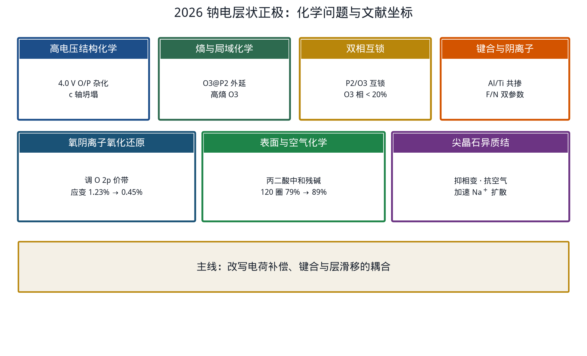
下面按化学逻辑走：先问电子从谁身上抽，再问骨架如何坏，最后看 2026 年怎样修。
充电是抽电子。抽谁，决定容量；抽完骨架歪不歪，决定寿命。钠电层状正极里，电子按电压从低到高大致走这条阶梯。
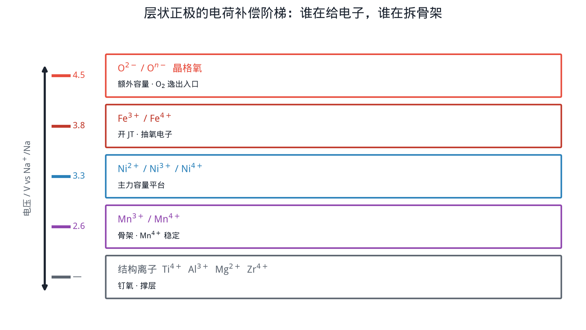
Ni2+/Ni3+/Ni4+ 是主力电压平台。Fe3+（高自旋 d5）充电变成 Fe4+（d4，t2g3 eg1），姜-泰勒开关被打开。Mn3+ 同样是高自旋 d4，经常出生就带着畸变；Mn4+ 是 d3，t2g3 半满，是稳定柱。
高电压下 O 2p 价带顶靠近费米能级，晶格氧开始丢电子。空穴被邻近 TM 钉住时，过氧对可逆；空穴离域时，O2 逸出、TM 迁入钠层，表面变成岩盐死层。2026 年的策略是调 O 2p 能级，把这段容量关进可逆窗口。
Ti4+、Al3+、Mg2+、Zr4+ 几乎不贡献容量。它们的工作是钉氧、撑层、剪协同、挡住 Fe 往四面体间隙跑。
Dalhousie 组 2026 年把 O3 型 NaMn0.39Fe0.31Ni0.22Zn0.08O2 软包做到 4.0 V。3.8 V 切到 3.9、4.0 V，首周容量升高，循环迅速掉下去。等温微量热、超高精度库仑和微区 XRF 把电解液寄生反应排除出主因。原位 / 非原位 XRD 给出结构答案：反复冲到 4.0 V，晶体长出八面体 / 三棱柱杂化相，c 轴坍塌，可逆性被锁死。
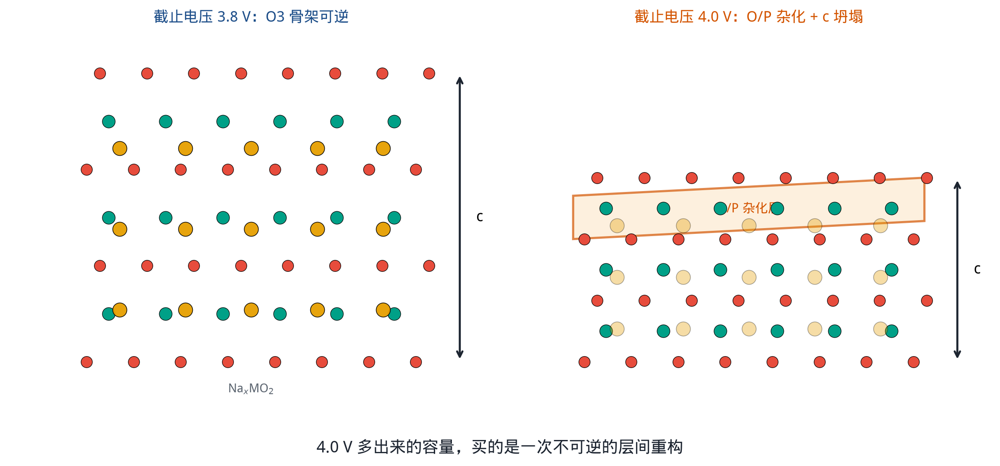
化学读法：高电压把 Fe3+ 推成 Fe4+，同时把 O 2p 空穴打开。层间钠柱被抽空，TMO2 板相对滑动，氧堆积从纯 ABC 变成局部棱柱混排。c 轴一塌，后续钠进出的通道几何就变了。
Na+/空位有序和协同姜-泰勒都需要长程相位对齐。同一套八面体格点上混入半径、价态、M–O 共价性都不同的离子，超结构被打散，畸变相位对不齐，电子态被局域化，氧更不容易成对逸出。
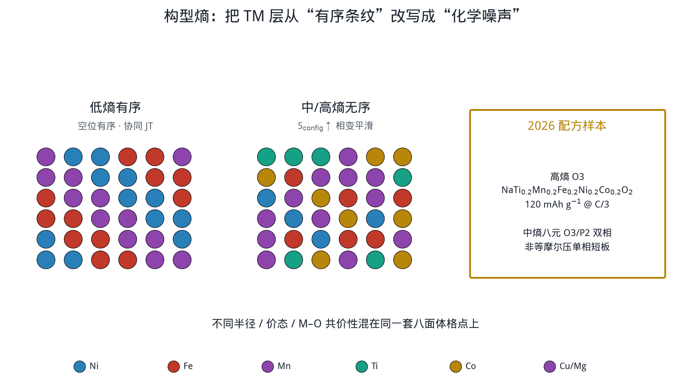
高熵氧化物里，Co3+、Fe3+、Ni2+ 贡献容量，Mn4+ 做结构形成离子，Ti4+ 钉骨架。构型熵给出的是统计上的无序，真正起化学作用的仍是每一类离子的价态和键合。
O3 的 x ≈ 1，全电池不缺钠，首周库仑效率高。P2 的三棱柱窗口宽，空气稳定性更好。Su 与 Chou 组用混合熵加阳离子势，在 O3 基体上外延生长 P2 晶域：内核 NaNi0.4Mg0.05Cu0.05Mn0.3Ti0.2O2，外壳 Na0.44Mn0.8Mg0.2O2。
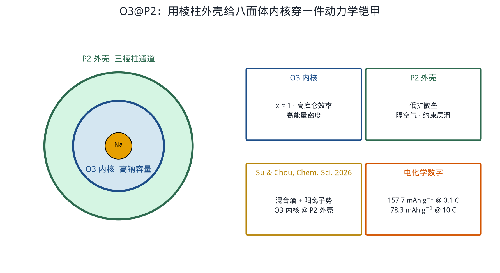
P2 外壳办三件事：矩形窗口降低近表面扩散垒；隔开 H2O / CO2；外延共格约束把 O3 的层滑矢量卡住。这是按阳离子势长出来的晶域，和 O3 一起呼吸。
P2 板要滑成 O2，必须整层平移。嵌在旁边的 O3 板平移矢量不同，界面错配能把滑移按住。这就是互锁。
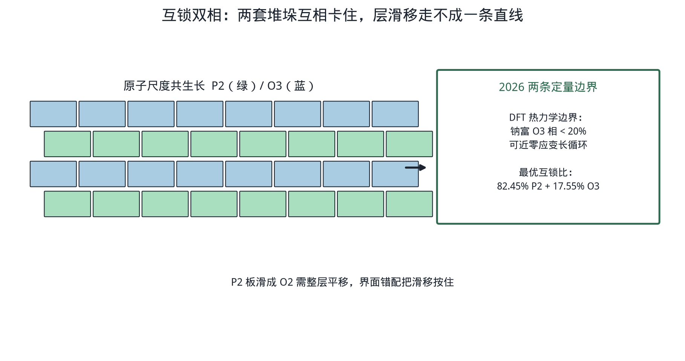
两条定量边界值得记下：O3 太多，高钠相的复杂相变会重新主导；O3 太少，全电池又回到 P2 缺钠的老问题。20% 附近是 2026 年算出来的折中点。
NFM（NaNi1/3Fe1/3Mn1/3O2）量产友好，短板是不可逆相变和慢扩散。Hou 等把 6% 的 TM 换成 Al0.03Ti0.03。
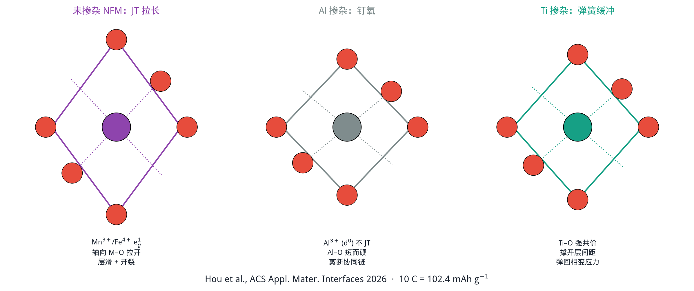
更强的 Al–O、Ti–O 键把过渡金属框架钉住，深脱钠时氧更不容易被抽走。层间距扩大后，Na+ 扩散垒下降。两种掺杂叠在一起：Al 管姜-泰勒，Ti 管相变应力。
阳离子掺杂的经验已经很多。阴离子坐进氧位，规则一直含糊。兰州大学拜永孝组以 O3-Na(NiFeMn)1/3O2 为模型，给出双参数准则。
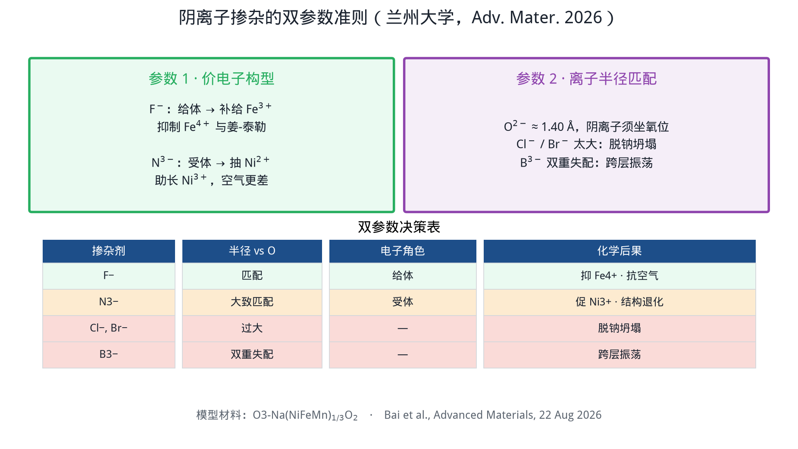
半径匹配氧位。作为电子给体，优先把电子补给高氧化态 Fe3+，Fe4+ 少了，姜-泰勒弱了。局部负电荷还排斥碳酸根，空气稳定性一起变好。
N3− 从 Ni2+ 抢电子，助长 Ni3+，高电压副反应加速。Cl−、Br− 半径过大，脱钠时相偏析。B3− 半径和构型都对不上，原子会跨层振荡。
P2-Na0.67Ni0.33Mn0.67O2 理论容量约 173 mAh g−1，高电压段一部分来自晶格氧。问题是这段容量经常不可逆：空穴离域，O2 跑掉，体积应变大。
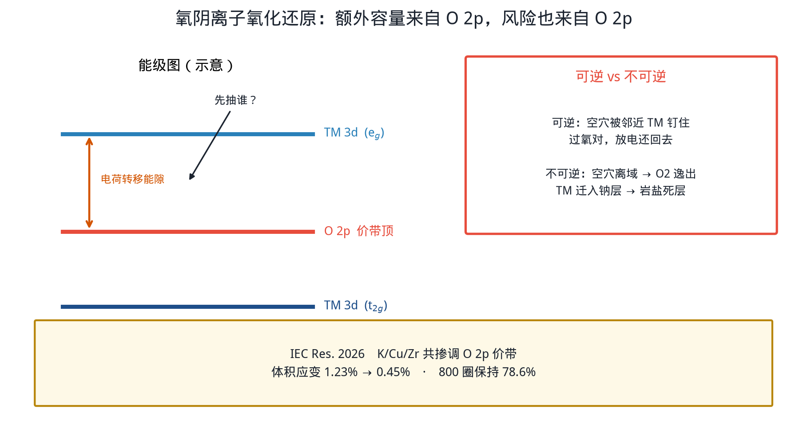
化学图像：K+ 撑钠层，Cu 改 d–p 杂化，Zr4+ 钉氧。O 2p 空穴被局域化，过氧对在放电时还能把电子还回去。同一年还有氧轨道调谐、Br 触发阴离子氧化还原、四配位硼抑制晶格氧逸出等平行路线，目标相同：让氧给容量，不让氧拆骨架。
尖晶石 AB2O4 有三维扩散通道，机械上更抗滑。氧密堆积骨架可以和层状共格，TM 占据从层状八面体扩到尖晶石的 8a / 16d。Zhu / Xiao 等 2026 年综述把做法归纳成体相复合、表面亚层、完整包覆三条。
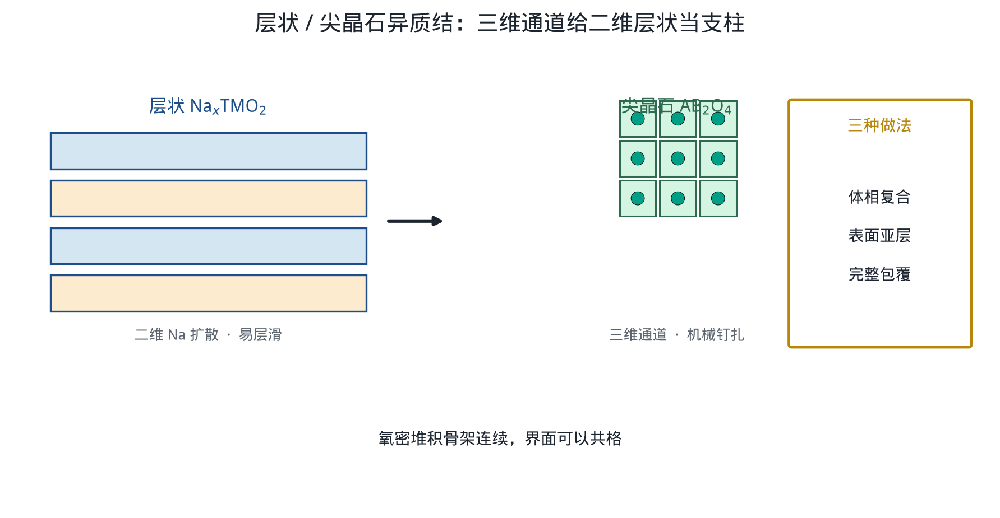
O3 吸水生成 NaOH，再吸 CO2 变成 Na2CO3 / NaHCO3。残碱吃 PVDF，浆料凝胶，循环中 CEI 增厚、颗粒边缘被蚀刻。这和体相掺杂是两件事。
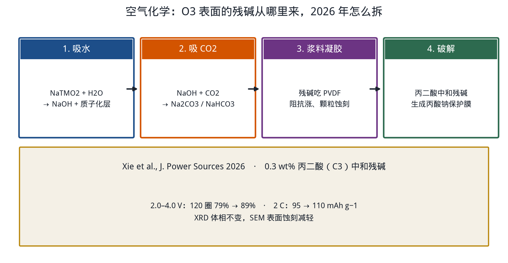
上海科技大学 2026 年用高精度透射式原位 XRD 把 O3-NaNi0.5Mn0.5O2 的相变逐格拆开：O3 → O′3 → P′3 → P3 → P′3′ → P3′ → O3′ / O3′′。此前文献里含糊的中间相被标定清楚。
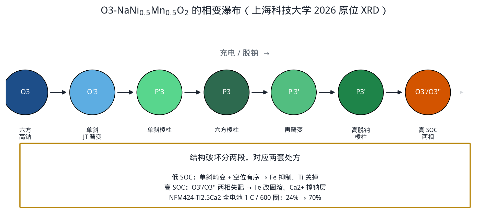
处方和前面几节对得上：低电压段打的是姜-泰勒和有序化，高电压段打的是层滑和晶格失配。Ca2+ 半径接近 Na+，适合做层间惰性支柱。
把容量、倍率、循环、空气、高电压可逆、成本六项摊开：纯 O3-NFM 容量和成本好，循环与空气弱；纯 P2-NNM 倍率好，容量和高压可逆弱。2026 年熵 + 双相 + 钉氧把短板往中间拉。
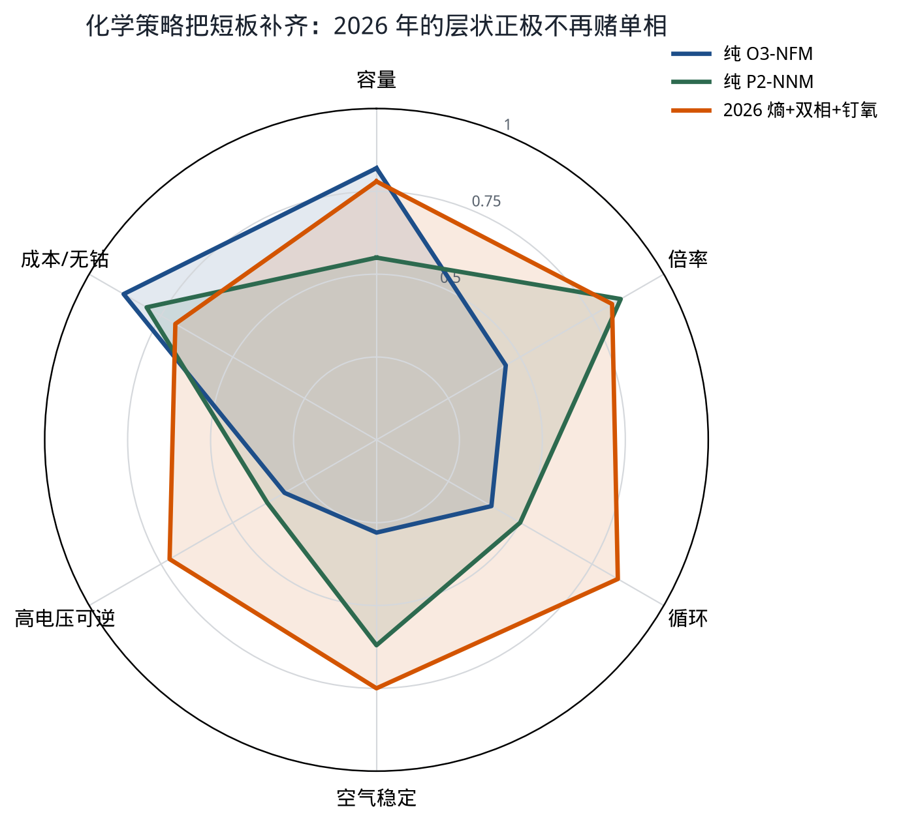
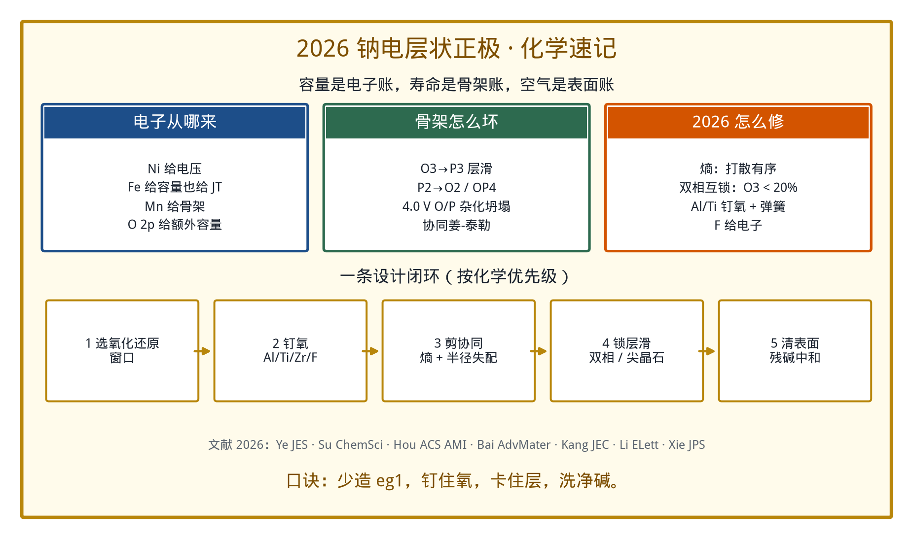
全部插图由 Python（matplotlib + numpy）生成，脚本在当前工作区的 scripts/draw_sib_2026.py，输出到 images/。
python3 scripts/draw_sib_2026.py结构几何与晶体场基础见 O3 / P2 / 姜-泰勒入门页。